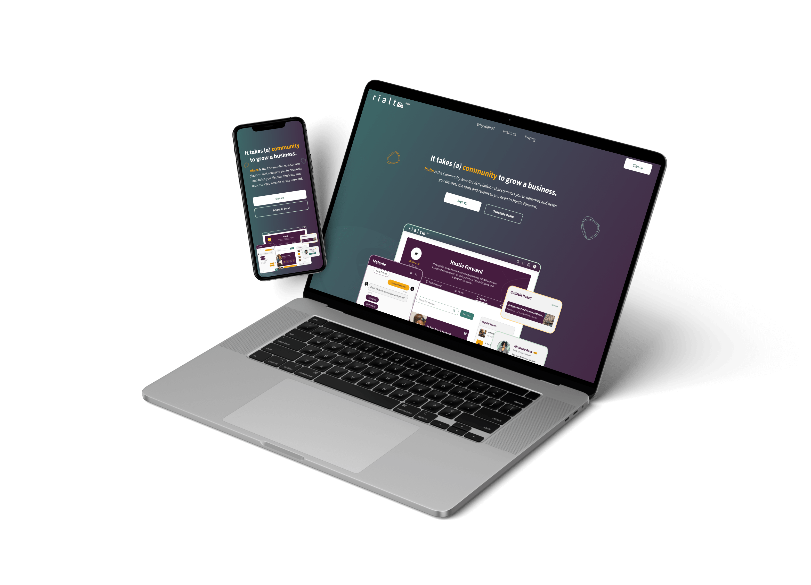
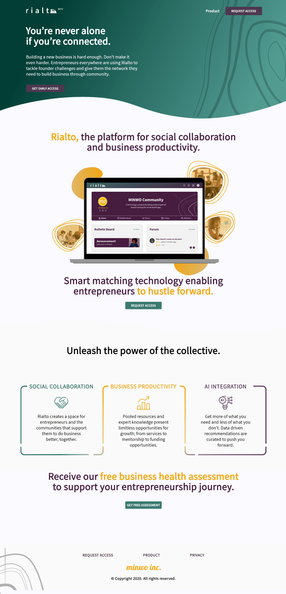
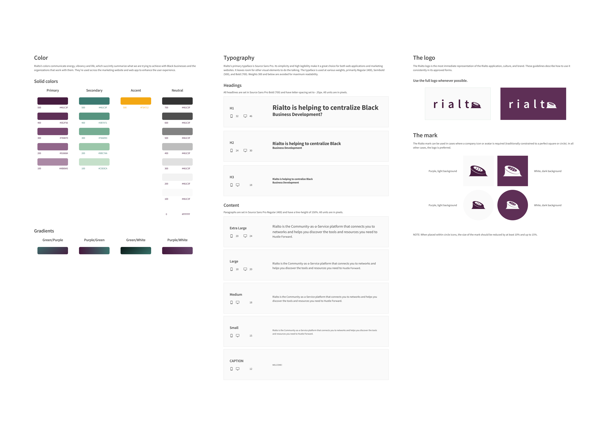
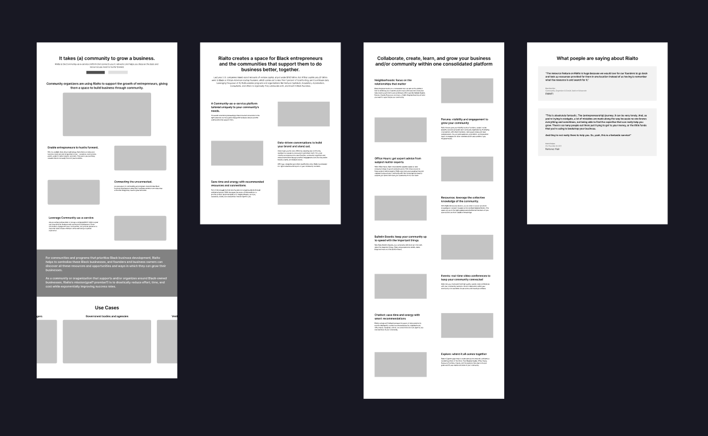
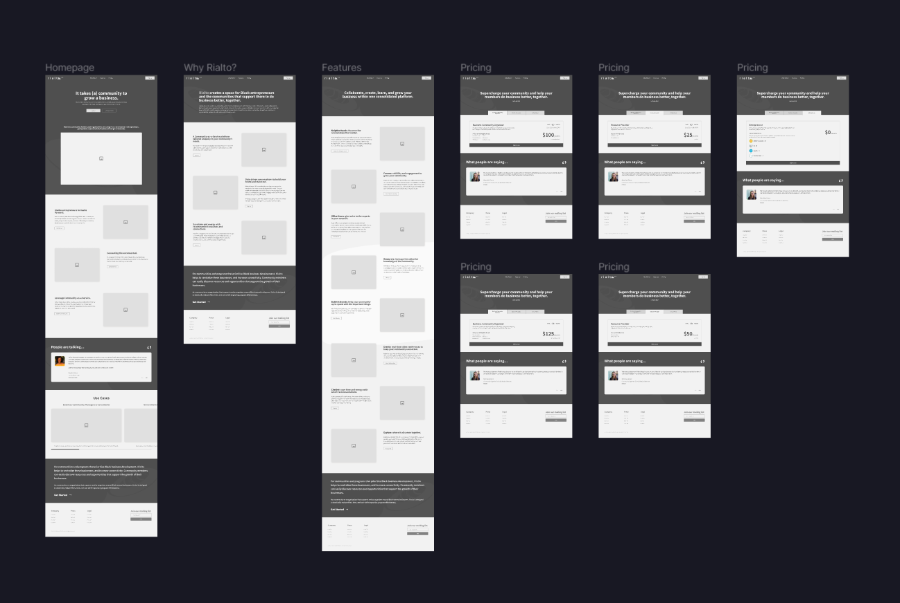

CASE STUDY
Rialto Product Site Redesign ✍🏽️

Overview — Reimagining a Product Site
UX Designer
Jul - Sept 2021
Initiated and led the UX effort to audit and redesign Rialto's product site, resulting in increased user engagement, improved visual design and clearer messaging.
Role
In my role as UX Designer, I collaborated with members of the Digital Presence team and other stakeholders, including the brand designer, the head of design and the CEO, to recreate the product site into what we have now: a much better representation of the product, both visually and in terms of messaging.
The Rialto product site is the face of the product and in many ways of the company as well, and a crucial driver for the company's revenue. It's our customers' first point of contact with the Rialto brand and product.
However, it was designed in a way that urgently needed to be improved on.
The most frequent comment by customers was that there was not enough context on the website for the product they were considering paying for; that there wasn't enough clarity about the product — the former website simply didn't give them enough information about the product.
Here's one of the pages (homepage) of the old design which I was tasked with revamping:

User Research
To find out the specific challenges users faced with the former product site design, we conducted a heuristic evaluation and began to include the website in product demos of the web application itself. So, each demo session began with navigating the product site leading to the application.
Findings
Both the user groups and individuals had similar comments to make about the application, AND the product site that had welcomed them to the application:
- They loved the application and felt they had a good experience walking through it.
- They thought the product site did not give them enough information about what to expect from the application, and felt a disconnect between the site and the app.
Problem Definition
Messaging:
Users were having trouble getting a clear understanding of what they stood to gain by signing up on the platform, which was a potential roadblock to achieving the company's business goals, as it could stop users from actually signing up. This was highest on the priority list.
Visual Disconnect:
Second on the priority list was the visual disconnect between the product site and the application. Users felt they were on two different platforms or environments, which in this day and age in digital product development, they were no longer used to.
The Solution
Process
UX Content Strategy (Problem 1):
The team held several brainstorming sessions involving all stakeholders to create new content for the website that met the following objectives:
- Explain in clear terms what the platform is.
- Give website visitors a clear picture of the type of users who would benefit from using Rialto to manage their communities.
- Present clearly the benefits business owners stand to gain by signing up on the platform.
- Encourage users to sign up by presenting social proof.
- Introduce clear calls to action to guide potential customers towards their next steps
Visual Design (Problem 2):
The design team, led by me, sought to align both product site and product to give users a smooth, homogeneous experience across all touch-points. This was achieved by a consistent and deliberate introduction of the product's style and assets across the website.
Style Guide

Sitemap

Wireframes

Low-fidelity mockups

High-fidelity mockups